응용지질기사 (2010-03-07 기출문제)
1과목: 암석학 및 광물학
1. 저반으로 산출되는 화성암체에서 흔히 관찰되는 조직이 아닌 것은?
- 비정질조직
- 완정질조직
- 등립질조직
- 조립질조직
(정답률: 85%)

2. 다음 중 저온 저압의 변성상은?
- 제올라이트상 (zeolite facies)
- 에클로자이트상 (eclogite facies)
- 녹색편암상 (greenschist facies)
- 각섬암상 (amphibolite facies)
(정답률: 87%)
3. 다음 중 쇄설성 퇴적물에 속하지 않는 것은?
- 암편
- 장석
- 중광물
- 해록석
(정답률: 70%)
4. 사문암의 변성되기 전 원암으로 가장 적절한 것은?
- 감람암
- 섬록암
- 섬장암
- 화강암
(정답률: 71%)
5. 셰일이 광역변성작용을 받아 변성암이 되었을 경우, 점차 변성정도가 높아짐에 따라 출현하는 지시광물의 순서로 옳은 것은?
- 규선석→십자석→흑운모→녹니석→석류석→남정석
- 십자석→녹니석→남정석→흑운모→규선석→석류석
- 흑운모→석류석→십자석→남정석→규선석→녹니석
- 녹니석→흑운모→석류석→십자석→남정석→규선석
(정답률: 91%)
6. 화성암의 암석 표본을 육안 관찰하였더니 흑운모와 각섬석은 보이나 석영은 거의 보이지 않으며 장석은 사장석만으로 구성되어 있다. 이 암석의 이름은?
- 화강암
- 몬조나이트
- 섬장암
- 섬록암
(정답률: 62%)
7. 다음 중 화성암의 주성분 광물이 아닌 것은?
- 감람석
- 사장석
- 각섬석
- 석류석
(정답률: 86%)
8. 마그마가 고온에서 저온으로 식어감에 따라 장석류가 정출되는 일반적인 순서로 맞는 것은?
- Ca가 많은 사장석→Na가 많은 사장석→K장석
- Na가 많은 사장석→Ca가 많은 사장석→K장석
- K장석→Ca가 많은 사장석→Na가 많은 사장석
- K장석→Na가 많은 사장석→Ca가 많은 사장석
(정답률: 79%)
9. 다음 중 지층의 상하 판단을 할 수 있는 퇴적구조와 가장 거리가 먼 것은?
- 사층리
- 퇴적소극
- 혼펠스
- 편마암
(정답률: 81%)
10. 다음 중 변성암의 대표적인 조직인 엽리 혹은 호상조직이 나타나지 않는 것은?
- 슬레이트
- 압쇄암
- 혼펠스
- 편마암
(정답률: 73%)
11. 다음에서 설명하는 원소는 무엇인가?
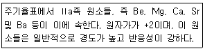
- 알칼리토 금속
- 희토류 원소
- 천이원소
- 알칼리 금속
(정답률: 68%)
12. 다음 중 투입쌍정(penetration twin)으로 성장하는 광물이 아닌 것은?
- 사장석
- 형석
- 정장석
- 십자석
(정답률: 47%)
13. 다음 중 불투명 광물을 반사광편광 현미경으로 관찰하여 식별할 때 이용하는 광물의 물리적 성질이 아닌 것은?
- 이방성
- 다색성
- 반사도
- 복반사
(정답률: 80%)
14. 녹염석(epidote)은 다음 중 어느 정계에 속하는가?
- 정방정계
- 육방정계
- 단사정계
- 삼사정계
(정답률: 45%)
15. 다음 중 교대작용에 의해 생성된 가상(pseudomorph)에 해당하지 않는 것은?
- 남동석 → 공작석
- 황철석 → 침철석
- 단사황 → 사방황
- 방해석 → 석영
(정답률: 66%)
16. 광물이 불규칙하게 성장하면 독특한 결정의 형태가 만들어진다. 아래 그림은 돌로마이트의 결정을 스케치한 것이다. 어떤 형태를 보여주는가?
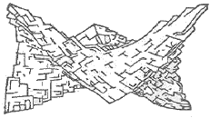
- 누대상 결정
- 만곡 결정
- 수지상 결정
- 해정
(정답률: 74%)
17. 광물 결정내에서 미세한 비정질 상태인 메타믹트(metamict) 현상이 발생하는 원인은?
- 광물에 포함된 결정수에 의해
- 광물 결정의 비틀림에 의해
- 광물에 포함된 방사성 원소에 의해
- 산소의 산화작용에 의해
(정답률: 86%)
18. 다음 중 경도가 4.0~4.5 이며, 비중이 3.89인 광물은?
- 능철석
- 침철석
- 티탄철석
- 황철석
(정답률: 59%)
19. 다음 중 강옥(corundum) 속에 미량으로 존재해 강옥을 붉게 발생하게 하는 원소는?
- Cr
- Mn
- Fe
- Cu
(정답률: 66%)
20. 규산염 광물의 기본 구조 단위는 SiO4 사면체이며, SiO4 사면체들의 연결방식에 따라서 여러 가지 구조가 형성된다. 규산염 광물의 구조에 의한 분류로 틀린 것은?
- 독립사면체형 - 감람석
- 층상구조 - 백운모
- 단쇄형 - 규회석
- 환형 - 투각섬석
(정답률: 63%)
2과목: 구조지질학
21. 다음 도면에서 향사형 배사(Stnformal anticline)에 해당하는 부분은 어디인가?
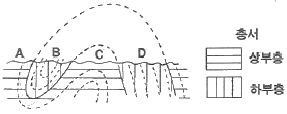
- A
- B
- C
- D
(정답률: 93%)
22. 다음 중 절리를 기하학적으로 분류할 때 아래 그림의 MNO절리는 어떠한 절리인가?
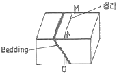
- 사교절리
- 주향절리
- 경사절리
- 층면절리
(정답률: 88%)
23. 다음 중 지진과 가장 관련이 없는 것은?
- 연성변형 (ductile deformation)
- 취성변형 (brittle deformation)
- 단층작용 (faulting)
- 탄성에너지 (elastic energy)
(정답률: 84%)
24. 한국의 지질계통명 중에서 선캠브리아 누대에 속하지 않는 것은?
- 연천계(연천층군)
- 평안계(평안누층군)
- 상원계(상원누층군)
- 영남계(영남누층군)
(정답률: 65%)
25. 다음 중 암상에 의한 암석층서 단위는?
- 대(Era)
- 기(Period)
- 대층(Erathem)
- 층(Formation)
(정답률: 54%)
26. 바람의 풍반작용과 마모작용을 통해 만들어진 지형이 아닌 것은?
- 사막포장 (desert pavement)
- 야당 (yardang)
- 사구 (sand dune)
- 풍식력 (ventifact)
(정답률: 82%)
27. 변환단층(Transform Fault) 경계와 관련이 가장 적은 것은?
- 해령
- 산 안드레아스 단층
- 천발지진
- 베니오프대
(정답률: 73%)
28. 하와이 열도에 있는 화산들의 절대 연령을 측정한 결과 남동쪽에서 북서쪽으로 갈수록 연령이 증가함을 관찰할 수 있다. 남동쪽의 하와이(Hawaii)섬은 0.1Ma이고 북서쪽으로 300km 떨어진 니하우(Niihau)섬은 4.9Ma일 때 태평양판이 이동하는 속도는? (단, 화산활동은 현재의 하와이섬의 위치에서만 고정되어 발생된다고 가정함. Ma : 백만년)
- 16cm/year
- 1.6cm/year
- 62.5cm/year
- 6.25cm/year
(정답률: 57%)
29. 다음 중 돌리네(doline) 구조가 발달할 수 있는 지층이 아닌 것은?
- 풍촌층
- 함백산층
- 막동층
- 두위봉층
(정답률: 80%)
30. 압쇄암(mylonite)의 설명으로 옳지 않은 것은?
- 지하 5km 이내에서 형성된다.
- 온도 250~350℃ 이상에서 형성됨
- 엽리구조를 가진다.
- 일반적으로 선구조를 포함하고 있다.
(정답률: 82%)
31. 다음은 한반도에서 발생한 주요 지질사건이다. 오래된 것부터 바르게 나열된 것은?
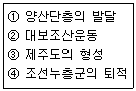
- ②①③④
- ④②①③
- ④②③①
- ②④①③
(정답률: 67%)
32. 다음 중 성장 단층(growth fault)에 대한 설명으로 옳지 않은 것은?
- 동시단층이라고도 한다.
- 전형적인 정단층이다.
- 활성적으로 성장하는 분지 내의 미고결 퇴적물이 새로이 퇴적되는 곳에서 특징적으로 발달한다.
- 전단응력(shear stress)의 작용으로 생성된다.
(정답률: 87%)
33. 암석 내의 지질구조 중 면구조에 해당하지 않는 것은?
- 점판벽개(slaty cleavage)
- 편리(schistosity)
- 멀리온(mullion)
- 편마상 띠 (gneissose banding)
(정답률: 74%)
34. 다음 중 해양지각에서 대륙지각쪽으로 갈수록 증가하는 성분은?
- K
- Al
- Ca
- Mg
(정답률: 92%)
35. 해양지각은 주로 어떤 성분의 암석으로 구성되어 있는가?
- 현무암질 암석
- 유문암질 암석
- 섬록암질 암석
- 화강함질 암석
(정답률: 80%)
36. 다음 지형 중 스러스트 단층과 관련이 없는 것은?
- 클리페(klippe)
- 창(window)
- 지구(graben)
- 극융(culmination)
(정답률: 74%)
37. 주로 압축 메커니즘에 의하여 지진이 발생되는 곳은?
- 변환단층(transform fault)
- 해령(occeanic ridge)
- 해구(trench)
- 순상지(shield)
(정답률: 98%)
38. 건조한 지역에서 가장 특징적인 지형으로 기반암이 침식된 평활한 완경사면으로서 얇게 또는 불연속적으로 충적토가 덮여있는 것은?
- 인젤베르크
- 페디먼트
- 바하다
- 플라야
(정답률: 95%)
39. 다음 중 준평원에 대한 설명으로 맞는 것은?
- 장년기 지층에서 흔히 나타나는 거의 평탄한 지형을 말한다.
- 노년기 지형에서 나타나는 평탄한 지형으로 침식 기준면 가까이 까지 침식되어 형성된다.
- 유년기 지형에서 나타나는 거의 침식받지 않은 평탄한 지형을 말한다.
- 장년기 지형에서 나타나는 기복이 심한 지형으로 지반이 상승시 나타난다.
(정답률: 83%)
40. 어떤 지질구조면의 주향과 경사가 각각 N30E, 60SE 이었다. 이를 경사방향/경사 형태로 올바르게 변환한 것은?
- 030/60
- 120/60
- 210/60
- 300/60
(정답률: 86%)
3과목: 탐사공학
41. 다음 중 유도분극(IP)탐사에서 주파수 효과를 나타내는 식은? (단, p1은 낮은 주파수 혹은 직류 겉보기 비저항이고, p2는 높은 주파수 혹은 교류 겉보기 비저항이다. )
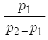
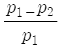
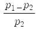
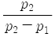
(정답률: 63%)
42. 대지에 자연적으로 발생하는 전위로 황화광물, 흑연, 자철석 등을 함유하는 특정지역에서 크게 나타나는 전위는?
- 전기역학적 전위
- 광화 전위
- 확산 전위
- 셰일 전위
(정답률: 57%)
43. 다음 중 유전상수 (dielectric constant)가 가장 큰 물질은?
- 물
- 토양
- 석영
- 적철석
(정답률: 87%)
44. 전자탐사에서 전자파의 크기가 1/e, 즉 37%로 감쇠되는 침투심도(Zs)를 표피심도(skin depth)라고 한다. 주파수가 3000Hz, 지층의 전기비저항이 30Ω-m 로 균질하다고 할 때 표피심도는 약 얼마인가?
- 5m
- 50m
- 500m
- 5000m
(정답률: 52%)
45. 암석이 약한 외부 전기장일지라도 오랫동안 영향을 받아서 잔류자기를 띠게 되는 현상을 무엇이라 하는가?
- 점성 잔류자화
- 화학 잔류자화
- 열 잔류자화
- 퇴적 잔류자화
(정답률: 56%)
46. 중력탐사자료에 대한 해석법으로 가장 적합한 것은?
- 2차 미분법
- 포아송 관계식
- 동일선법
- 로그-파워법
(정답률: 85%)
47. 다음 중 지구화학탐사에 대한 설명으로 옳지 않은 것은?
- 일반적으로 수소화합물 광상의 탐사에 유용하다.
- 지하에 존재하는 광상이나 탄화수소를 지구화학적 방법으로 탐사하는 것을 말한다.
- 다른 탐사방법이 적용되기 어려운 지역에서 광역탐사를 실시할 경우에 개략조사로서 많이 이용되고 있다.
- 암석, 토양, 표사, 자연수, 식물 등에 함유된 한 가지 이상의 원소들을 화학적 방법에 의해 체계적으로 측정한다.
(정답률: 53%)
48. 노말 전기비저항 검층에서 전류전극과 전위전극 간의 간격이 40cm 일때 측정한 전위차가 100mV 이엇다. 이때 흘려보낸 전류량이 50mA이었다면 측정된 노말 전기비저항 값은 얼마인가?
- 1.26Ω-m
- 2.51Ω-m
- 5.03Ω-m
- 10.⑤Ω-m
(정답률: 35%)
49. 같은 암석일지라도 지질학적 조건에 따라서 암석이나 퇴적물에서의 탄성 파의 속도가 달라지지만 몇 가지의 대략적인 법칙이 성립한다. 다음 설명 중 옳지 않은 것은?
- 불포화된 퇴적물은 포화된 퇴적물보다 속도가 느리다.
- 미고결 퇴적물은 고결 퇴적물보다 속도가 느리다.
- 파쇄되지 않은 암석은 파쇄된 암석보다 속도가 느리다.
- 풍화된 암석은 풍화되지 않은 암석보다 속도가 느리다.
(정답률: 79%)
50. 물리탐사에서 널리 수행되는 역산(inversion)에 대한 설명으로 가장 올바른 것은?
- 주어진 모델변수 (지하 물성분포)로부터 이론자료를 얻는 과정이다.
- 현장자료로부터 모델변수를 얻는 과정이다.
- 모델변수와 현장자료 사이의 상관관계를 얻는 과정이다.
- 모델변수의 변화에 대한 이론자료의 변화량을 계산하는 과정이다.
(정답률: 88%)
51. 다음 중 지표 반사법 탄성파 탐사의 자료처리 과정이 아닌 것은?
- CDP중합 (common depth point stacking)
- 뮤팅 (muting)
- 초동발췌 (first arrival time picking)
- NMO (normal move-out)
(정답률: 67%)
52. 토양의 무기성분이 산성 부식산의 영향으로 심하게 분해되어 Fe, Al까지도 졸(sol) 상태로 되어 하층으로 이동하는 토양생성작용은?
- Laterite화 작용
- Podzol화 작용
- Glei화 작용
- 석회화 작용
(정답률: 93%)
53. 쓰레기 매립지로부터의 침출수나 해수침입에 의해 오염된 지하수의 탐지에 가장 적합한 탐사방법은?
- 탄성파탐사
- 전기비저항탐사
- 중력탐사
- 자력탐사
(정답률: 83%)
54. 다음 중 지자기의 일변화 (diurnal variation)에 가장 영향을 끼치는 것은?
- 태양
- 맨틀이나 외핵의 운동
- 유도전자장
- 자기폭풍
(정답률: 63%)
55. 물리탐사 측정기기 중 강자성체의 자기 포화 특성을 이용하여 자기장을 측정하는 기기는 무엇인가?
- 핵 자력계
- 플럭스게이트 자력계
- 포테클리노미터
- 스퀴드자력계
(정답률: 89%)
56. 다음 ( )안에 알맞은 내용은 무엇인가?
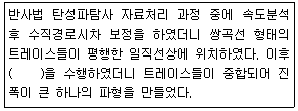
- 정보정 (static correction)
- 공심점모음 중합 (CDP gather stack)
- 구조보정 (migration)
- 진폭조정 (amplitude adjustment)
(정답률: 66%)
57. 다음 중 탄성파에 관한 설명으로 옳지 않은 것은?
- 종파가 진행할 때 매질 입자들은 파의 진행 방향으로 압축과 팽창변형을 수반하여 진동하는 것으로 P파라고도 한다.
- 횡파의 속도는 종파의 속도보다 느려서 지진지록에서 종파 다음에 도착하므로 2차파라고도 한다.
- 레일리파에서 입자의 운동을 수직면상에서 타원역행운동을 하며, 입자의 운동방향은 파의 운동방향과 반대이다.
- 러브파는 지표면과 평행한 입자의 운동에 의해여 전파되며, S파와 비슷하다.
(정답률: 62%)
58. 서울 남산 일대의 육상에서 중력탐사를 실시하고 중력보정을 할 때 필요없는 것은?
- 지형 (terrain) 보정
- 조석 (tidal) 보정
- 에트뵈스 (Eötvös) 보정
- 프리에어 (free-air) 보정
(정답률: 76%)
59. 외부에서 자기장이 가해지면 외부자기장의 방향과 유사한 자화방향을 가진 wwkrn는 면적이 커지고, 그렇지 않은 자구는 면적이 좁아지는 특성을 보이는 자성체는?
- 강자성체
- 상자성체
- 반자성체
- 페리자성체
(정답률: 87%)
60. 굴절법 탄성파탐사에서 굴절파가 직접파를 앞질러 처음으로 초동으로 나타나는 지점과 음원과의 거리를 교차거리라 한다. 수평 2층 구조에서 제1층의 탄성파 속도가 1km/sec, 2층의 속도가 2km/sec, 교차거리가 30m일 경우 제1층의 두께는 얼마인가?
- 7.07m
- 8.66m
- 10.2m
- 11.18m
(정답률: 56%)
4과목: 지질공학
61. 암반사면의 안정성을 해석할 때 필요한 입력자료에 해당하지 않는 것은?
- 암반의 탄성계수
- 불연속면의 방향성
- 불연속면의 마찰각
- 사면의 경사방향
(정답률: 89%)
62. 두 층으로 이루어진 성토층이 있다. 상부층과 하부층의 두께는 각각 1.2m, 2.3m이며, 상부층의 투수계수는 1.3x10-4m/sec, 하부층의 투수계수는 2.7x10-4m/sec 일 때 이 성토층의 수평 방향 평균투수계수는 얼마인가?
- 1.14x10-4m/sec
- 1.74x10-4m/sec
- 2.22x10-4m/sec
- 3.34x10-4m/sec
(정답률: 60%)
63. 지반의 특성을 파악하고 실내시험용 시료를 얻기 위하여 샘플러를 사용하여 시료를 채취한다. 다음 중 교란시료(disturbed sample)를 채취하는데 사용되는 샘플러는?
- 분리형 원통 샘플러(slit spoon sampler)
- 고정피스톤 샘플러(stationary piston sampler)
- 얇은 관 샘플러(thin wall tube sampler)
- 포일 샘플러(foil sampler)
(정답률: 96%)
64. 다음 중 현장에서 이루어지는 실험에 해당하지 않는 것은?
- 평판재하시험
- 슬레이크내구성시험
- 표준관입시험
- 수압파쇄시험
(정답률: 60%)
65. 지름 5cm, 길이 2cm인 원주형 시험편을 이용하여 압열인장시험을 실시하였을 때 하중 500kg에서 시험편이 파괴되엇다. 이 때 인장강도는 얼마인가?
- 15.9kg/cm2
- 31.8kg/cm2
- 99.5kg/cm2
- 199kg/cm2
(정답률: 62%)
66. 어떤 모래층의 표준관입시험에 의한 N 값 측정결과 N=11이었다면 이 모래층의 상태는?
- 대단히 느슨한(Very loose) 상태
- 느슨한(loose) 상태
- 중간(medium) 상태
- 조밀한(dense) 상태
(정답률: 80%)
67. 흙의 압밀배수시험에서 압축지수가 0.2인 흙시료에 작용하는 하중을 10배 증가시켰을 때 공극비의 감소량은 얼마인가?
- 0.02
- 0.2
- 2.0
- 5.0
(정답률: 70%)
68. 암반분류법인 Q-system에 대한 설명으로 옳지 않은 것은?
- 터널지보의 설계를 용이하게 해주는 공학적인 분류체계이다.
- 불연속면의 방향성에 대해서는 고려하지 않는다.
- Q-system은 각 요소의 최소, 최대값을 조합했을 때 0.001~1000사이의 값을 갖는다.
- Q값을 나타내는 식 중 RQD/Jn 항은 암괴간의 전단강도를 나타낸다.
(정답률: 55%)
69. 기본 RMR 값이 75인 암반에 터널을 굴착하였다. 불연속면의 주향은 터널의 굴착 방향과 수직하고, 30°정도 경사져 있으며 터널은 불연속면의 경사방향으로 굴착되었다고 한다면 이 암반의 최종 RMR 값은 얼마인가? (단, 터널에서의 불연속면의 방향에 대한 보정 값은 다음표와 같다.)
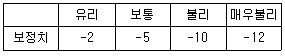
- 63
- 65
- 70
- 73
(정답률: 30%)
70. 다음이 설명하는 대수층은 무엇인가?
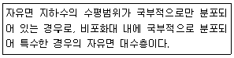
- 준대수층
- 지연대수층
- 부유대수층
- 난대수층
(정답률: 52%)
71. 구조물 기초의 설계에 필요한 지반 물성을 파악하기 위해 실시하는 평판재하시험의 결과를 이용하여 예측할 수 없는 것은?
- 극한지지력
- 지반반력계수
- 침하량
- 전단응력
(정답률: 72%)
72. 다음 중 터널 공사시 지보재로 사용되는 록볼트의 작용효과로 옳지 않은 것은?
- 매달림 효과
- 내압 효과
- 풍화방지효과
- 지반개량효과
(정답률: 74%)
73. 다음 중 암석의 물리적 풍화작용을 일으키는 요인과 관계없는 것은?
- 물의 동결, 융해작용
- 온도변화
- 염의 결정화
- 산성비의 작용
(정답률: 97%)
74. 사면의 안정화 공법 중 사면의 안전율을 증가시키기 위한 목적으로 시공되는 억지공법에 해당하지 않는 것은?
- 배수공법
- 압성토공법
- 앵커공법
- 옹벽공법
(정답률: 71%)
75. 지반침하의 형태에 따른 분류 중 골형침하(trough subsidence)의 특징으로 옳지 않은 것은?
- 급경사층에서 발생하는 경향이 있다.
- 오랜 시간에 걸쳐 서서히 발생한다.
- 넓은 지역에 걸쳐 발생한다.
- 지표 침하량의 크기가 침하 면적에 비해 작다.
(정답률: 89%)
76. 다음 중 유선망의 특성에 대한 설명으로 옳지 않은 것은?
- 인접한 2개의 유선 사이를 흐르는 침투수량은 서로 같다.
- 인접한 2개의 등수두선 사이의 손실 수두는 서로 같다.
- 유선과 등수두선은 서로 평행하다.
- 유선망을 이루는 사각형은 이론상 정사각형이다.
(정답률: 82%)
77. 다음 중 주입 (grouting) 공법의 적용 목적이 아닌 것은?
- 지반의 차수성 증가
- 지반의 강도 및 지지력 증가
- 기존 구조물의 기초 보강
- 사면 표면의 풍화 방지
(정답률: 89%)
78. 다음 중 동다짐(Dynamic compaction) 공법에 대한 설명으로 옳지 않은 것은?
- 전력설비가 없는 곳에서의 시공이 가능하다.
- 지지력의 소폭적인 증가가 요구될 때 효과적이다.
- 주변의 흙이 교란되지 않고 소음이 없다.
- 낙하고 조절이 가능하여 강력한 에너지를 얻을 수 있다.
(정답률: 76%)
79. 다음 중 역학적으로 이방성이 가장 적게 나타날 수 있는 암석은?
- 화강암
- 천매암
- 편암
- 셰일
(정답률: 78%)
80. 포화된 흙에서 중력 배수 할 때 공극내에 있는 물은 일정 부분만 배출된다. 중력에 의해서 배수되는 물의 부피와 전체 흙의 부피와의 비는 무엇이나?
- 비보유율
- 비산출율
- 저류계수
- 투수량계수
(정답률: 76%)
5과목: 광상학
81. 조선누층군 석회석광상의 특징이 아닌 것은?
- 주로 대석회암층군 (풍촌석회암, 막동석회암)에 부존되어 있다.
- 지질연대로는 석탄기말이 대부분이다.
- 분포지역으로는 강원도 중부와 남부, 충북 북부지역이 해당된다.
- 과거 해변의 온난화 기후아래 산화 환경에서 퇴적되었던 것으로 사료된다.
(정답률: 71%)
82. 우리나라에서 연-아연을 산출하는 대표적인 광상은 연화광산이다. 이 광산은 어떤 종류의 광상에 속하는가?
- 정마그마 광상
- 페그마타이트 광상
- 퇴적 광상
- 스카른 광상
(정답률: 43%)
83. 일부 수렴경계에 형성되는 오피 복합체 (ophiolite)에서 일반적으로 탐사가능한 광상의 유형은?
- 반암형 광상
- 스카른형 광상
- 키프러스형 괴상 황화물 광상
- 구로코형 괴상 황화물 광상
(정답률: 34%)
84. 우리나라의 금 은 광상의 주 광화 시기는?
- 신생대
- 중생대
- 고생대
- 선캠브리아기
(정답률: 72%)
85. 페그마타이트 광상에 대한 설명으로 옳지 않은 것은?
- 우리나라에서는 상동 중석 광상이 대표적이다.
- 생성온도는 500~600℃ 정도이다.
- Li, Be, Nb, Ta 등의 희유원소와 관련된다.
- 거정질 광물이 발달한다.
(정답률: 42%)
86. 광물의 침전온도와 압력 및 광화유체의 화학적 특성에 대한 정보를 제공하는 것은?
- 광물의 조직과 결정형
- 안정동위원소
- 용융점
- 유체포유물
(정답률: 78%)
87. 우리나라에는 제3기 지층의 분포면적이 대단히 협소하다. 다음 지층 중 제 3기 지층에 해당하는 것은?
- 회동리층
- 장성층
- 서귀포층
- 묘곡층
(정답률: 72%)
88. 광화유체의 종류의 천수(Meteoric water)에 대한 설명으로 옳지 않은 것은?
- 천수는 대체로 약알칼리성을 나타낸다.
- 기원에 관계없이 대기를 순환했고, 대기와 평형을 이룬 물이다.
- 천수에는 나트륨, 칼슘, 마그네슘 등 지각에서 우세한 원소가 많이 포함 되어 있다.
- 지표 수 km이내의 암석속에 존재하는 대부분의 물은 천수이다.
(정답률: 66%)
89. 다음 중 주로 속성작용에 의해 형성된 비금속광물자원은?
- 장석
- 활석
- 벤토나이트
- 납석
(정답률: 63%)
90. 다음이 설명하는 것은 무엇인가?
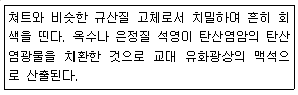
- 자스페로이드 (jasperoid)
- 엽납석 (pyrophyllite)
- 빙장석 (adularia)
- 보자이트 (bojite)
(정답률: 50%)
91. 우리나라에서 산출되는 석탄자원의 거의 대부분이 매장되어 있는 지층은?
- 조선누층군
- 평안누층군
- 대동누층군
- 경산누층군
(정답률: 47%)
92. 다음 중 표성부화광상의 황화부화대에서 생성되는 광물이 아닌 것은?
- 반동석
- 코벨라이트
- 황동석
- 휘동석
(정답률: 36%)
93. 기성광상에서의 모암변질 작용에 해당하는 것은?
- 녹니석화작용
- 불석화작용
- 견운모화작용
- 전기석화작용
(정답률: 50%)
94. 한국의 주요 철광상 중의 하나였던 강원도 양양철광의 철광을 배태하는 암석은?
- 각섬암(amphibolite)
- 유문암(rhyolite)
- 회장암(anorthite)
- 규암(quartzite)
(정답률: 44%)
95. 다음 중 스카른(Skarn) 광물에 속하는 것은?
- 방해석, 중정석
- 정장석, 사장석
- 석류석, 규회석
- 흑운모, 감람석
(정답률: 80%)
96. 다음 중 동생광상에 해당하는 것은?
- 정마그마광상
- 페그마타이트광상
- 기성광상
- 열수광상
(정답률: 72%)
97. 다음 중 보옥사이트(Bauxite) 광상의 성인으로 가장 적합한 것은?
- 화강암을 근원암으로 한 침전광상
- 화강암을 근원암으로 한 사광상
- 섬장암을 근원암으로 한 풍화잔류 광상
- 섬장암을 근원암으로 한 산화부화 광상
(정답률: 85%)
98. 다이아몬드를 함유할 수 있는 암석은 어떤 종류의 화성암에 속하는가?
- 초염기성암
- 염기성암
- 중성암
- 산성암
(정답률: 73%)
99. 다음 중 광상의 생성온도 연구와 관계없는 것은?
- 가상(Pseudomorph)
- 용리현상(Exsolution)
- 전이점(inversion point)
- 유체포유물(Fluid inclusion)
(정답률: 52%)
100. 우리나라 동광상에 대한 설명으로 옳지 않은 것은?
- 동과앙의 대부분은 반암동 광상에 해당한다.
- 주요 동광상의 분포는 경상분지에 위치한다.
- 경남 함안-군북 지역의 동광은 열극충진 액상광상에 해당한다.
- 우리나라의 동광상을 성인별로 크게 나누면 열극충진 맥상광상, 접촉 교대광상, 화산각력파이프광상, 반암동광상 등으로 대별할 수 있다.
(정답률: 24%)